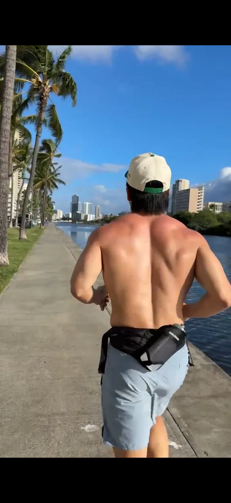

無料相談
今の悩みを話して、サービスが自分に合うか確かめる。
LINEで無料相談を申し込む公式LINEに「無料相談希望」と送ってください。
体験コーチング
コーチングを受けて、まず1週間試す行動を決める。
LINEで体験を申し込む公式LINEに「体験希望」と送ってください。体験のみでも利用できます。本契約時は体験料を全額充当します。

「このままでいいのかな」と思いながら、自分のことはつい後回し。そんな日が続いたら、明日の過ごし方を一つ、自分で選ぶところから。
気になる項目を選んで、まず一つ。面談では、その一歩をあなたの生活に合わせて考えます。
行動計画のサンプル
昼食のあとに、建物の周りをひと回り。
雨の日は、室内で5分動く。
2ヶ月 自己管理自走化プログラム
300,000円 （税込）
1〜2週目
大切にしたいことを整理して、今週試す行動を選ぶ。
3〜5週目
やってみたことを振り返り、量やタイミングを調整する。
6〜8週目
忙しい週でも再開できるように、自分なりの戻り方を考える。
週1回のZoom面談（60分 × 全8回）と、Notionの日記・コメント。
日記は任意です。内容を確認して適宜コメントを返します。最終回では、今後の行動と崩れたときの戻し方を整理します。終了後の継続サポートは希望者にご案内します。
満18歳以上対象。全てオンラインで提供します。医療行為、対面指導・施術、即時返信・常時対応は含まれません。特定の結果を保証するものではありません。契約条件は申込み前にご説明し、書面で交付します。

整形外科やジムで、やることは分かっていても、日常では続かない場面を見てきました。僕自身も同じです。だから面談では、実際に続けられそうな形を一緒に考えます。
増輪 孝太 / Kota
base discipline 代表 · 理学療法士 · NSCA-CPT
今の悩みを話して、サービスが自分に合うか確かめる。
LINEで無料相談を申し込む公式LINEに「無料相談希望」と送ってください。
コーチングを受けて、まず1週間試す行動を決める。
LINEで体験を申し込む公式LINEに「体験希望」と送ってください。体験のみでも利用できます。本契約時は体験料を全額充当します。
満18歳以上対象。無料相談を挟まず体験から始めることもできます。
現在の悩みと希望を伺い、サービスが合うか一緒に確認します。支援内容・料金・条件への疑問を解消する場です。具体的な行動計画の作成は、90分の体験で行います。
無料相談（30分）は、サービスが自分に合うか確認する時間です。体験（90分・15,000円税込）は、実際にコーチングを受け、運動・睡眠・食事を土台にまず1週間の行動計画をつくる時間です。無料相談を挟まず、体験から始めることもできます。
2ヶ月 自己管理自走化プログラムは300,000円（税込）です。支援内容と契約条件は、お申込み前にご説明します。初回トライアルは15,000円（税込）／90分。本契約時は全額を受講料に充当します。
受けられます。どんな生活を送りたいか、大切にしたいことは何かを一緒に整理し、取り組む方向と日々の行動を具体化します。
本サービスは、目標に向けて行動を継続できる習慣づくりを支援する2ヶ月間のコーチングです。特定の目標の達成や、達成するまでの無期限の支援を約束するものではありません。運動・睡眠・食事を土台に、行動を振り返って、ご自身で次の行動を決められる状態を目指します。
連絡は必須ではありません。日記は1行でも大丈夫です。いただいた日記には、曜日・営業時間を定めず、内容を確認して適宜コメントを返します。即時返信・常時対応・一定時間内の返信・緊急対応を約束するものではありません。提出を義務にすると続かなくなるので、書けない日は書けないままで構いません。
大丈夫です。対象は「一人では習慣や行動を続けにくい」方です。運動経験は問いません。睡眠・食事・時間の使い方など、今の生活で取り組めることから始めます。
2ヶ月で、行動・記録・振り返りの流れを身につけることを目指します。最終回では、ご自身で続けるための行動計画と、崩れたときの戻し方を整理します。なお、効果や成果には個人差があり、特定の結果を保証するものではありません。
はい。全8回の面談はZoom、日常の伴走はNotionの日記とコメントで行い、対面での提供は含みません。ご自宅等から受講できます。日時は日本時間で調整します。
満18歳以上の方のみお申し込みいただけます。18歳未満の方はご利用いただけません。
できます。LINE・メール等の客観的記録に残る方法で通知いただければ中途解約が可能です。詳細は特定商取引法に基づく表記をご確認ください。
予約・回数券の管理や記録の整理等に、外部クラウドやAIを補助的に利用することがあります。扱う情報を必要な範囲に絞り、個人情報をAIで扱う前に利用条件を確認し、必要な説明・同意取得を行います。AIの出力は運営者が確認します。詳細はプライバシーポリシーのAI利用についてをご確認ください。AI利用を希望しない場合は、お申込み前にご相談いただけます。
いいえ。自己管理・生活習慣の定着を目的としたコーチングです。診断・治療、心理療法、医療上の栄養指導は行いません。身体や心に不調がある場合は、適切な医療機関への相談を優先してください。
中心となるのは、運動・睡眠・食事を生活の土台として整え、ご自身の目標につながる行動を継続するための習慣づくりです。毎回の対話・計画・振り返りを通して支援します。パーソナルトレーニングやコンディショニングの個別指導は別サービスとしてご案内します。
受けられます。体験コーチング（90分・15,000円税込）は、オンライン（Zoom）で実施します。まず1週間の行動計画をつくる内容で、体験だけでもご利用いただけます。本プログラムにお進みの場合は、この費用を全額受講料に充当します。プログラム終了後の継続サポートについても、ご希望に応じてご案内します。内容・料金・条件は面談時に書面で明示します。

身につけるもの、トレーニングで使うものを、日常の中に。